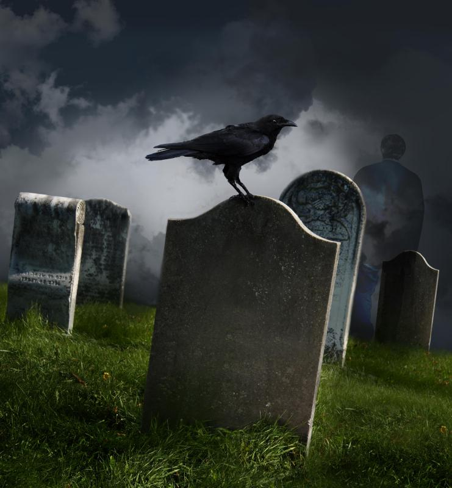

The Birth of a Genre
Gothic literature emerged in the late 18th century, blending elements of horror and romance. It is characterized by its dark, mysterious settings, supernatural elements, and an atmosphere of suspense and terror. The genre's name is derived from the Gothic architecture of the medieval period, which often served as the setting for these eerie tales.
Early Influences
The genre was influenced by earlier works of horror fiction, medieval romance, and the Gothic architecture of the time. Gothic literature often drew inspiration from the medieval castles, abbeys, and ruins that dotted the European landscape. The first Gothic novel is often considered to be Horace Walpole's The Castle of Otranto, published in 1764. Walpole's novel set the stage for many of the genre's key characteristics, such as the mysterious and haunted castle, the damsel in distress, and the sinister villain.
Development and Evolution
Following the publication of Walpole's novel, Gothic literature quickly gained popularity. Ann Radcliffe, often considered the "Queen of Gothic Fiction," further developed the genre with her novels, including The Mysteries of Udolpho and The Italian. Radcliffe's works introduced the concept of the "explained supernatural," where seemingly supernatural events are later revealed to have natural explanations. This technique added layers of mystery and suspense to her stories.
Another significant figure in the development of Gothic literature was Matthew Gregory Lewis, whose novel The Monk shocked readers with its explicit depictions of violence, sexuality, and the supernatural. Lewis's work pushed the boundaries of the genre, incorporating elements of horror and sensationalism.
Key Themes and Motifs
Gothic literature is characterized by several recurring themes and motifs. Common elements include:
- Haunted and crumbling buildings, such as castles and abbeys
- Dark and foreboding landscapes
- Supernatural occurrences and the presence of ghosts or otherworldly beings
- Psychological terror and the exploration of the human mind
- Romantic elements, often involving doomed or forbidden love
- Complex and tormented characters, including villains and anti-heroes